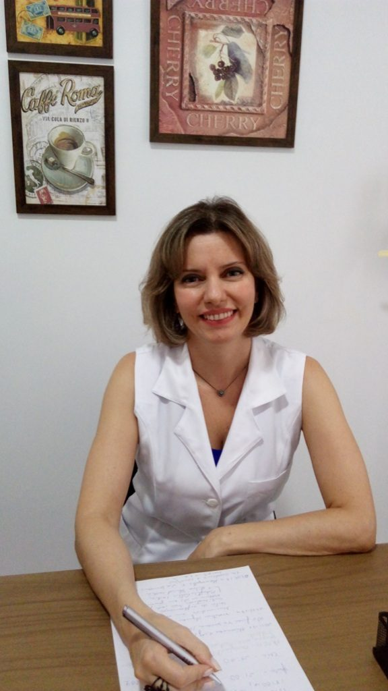
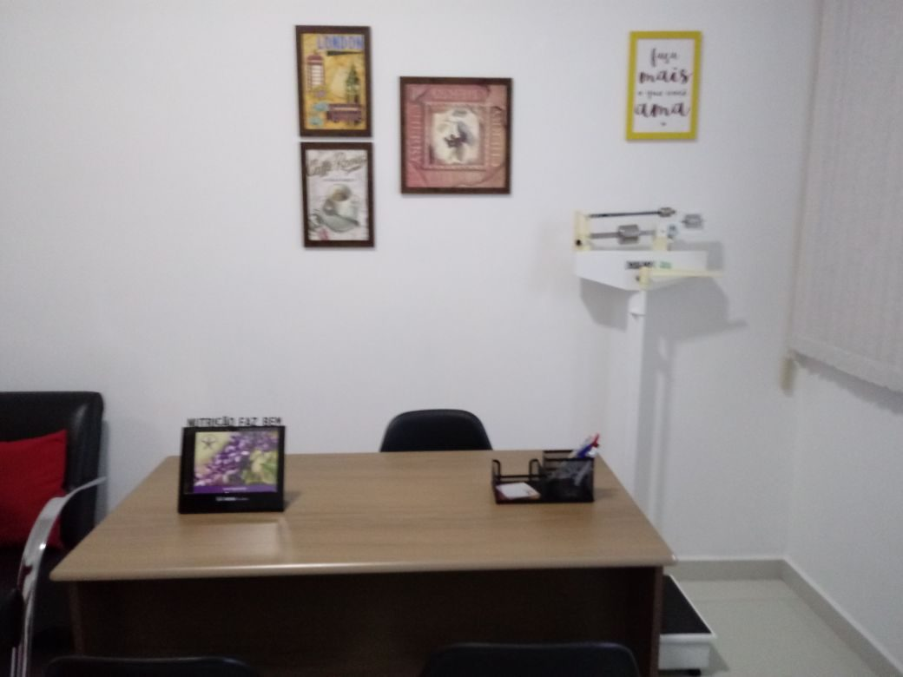
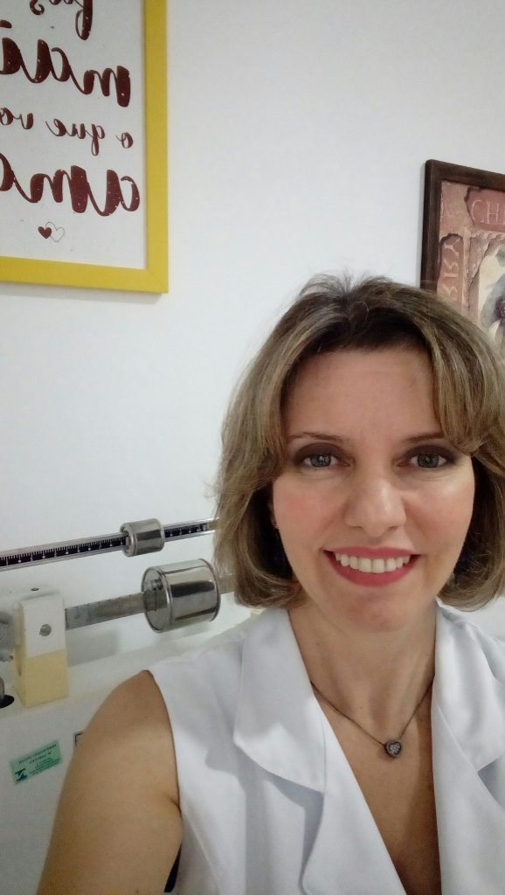
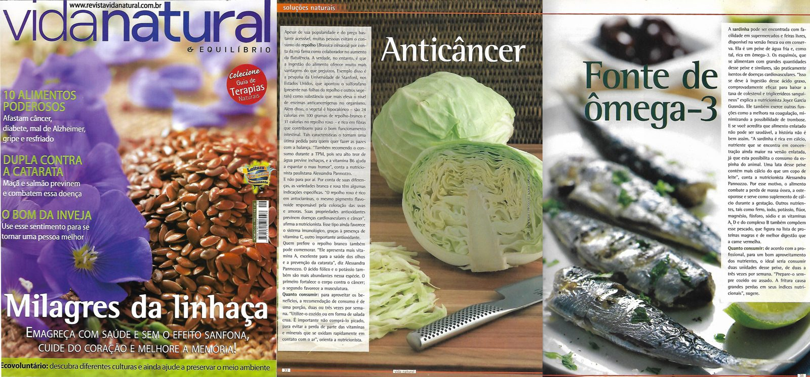
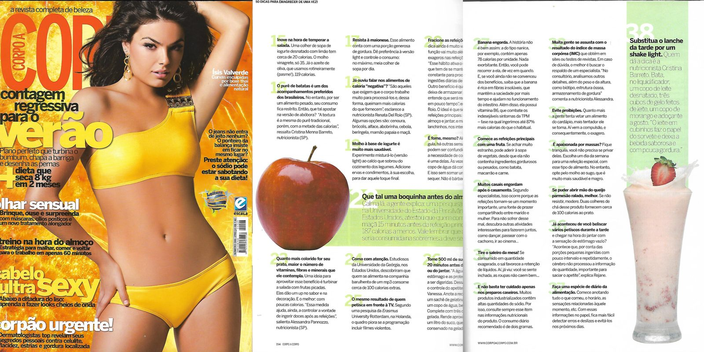
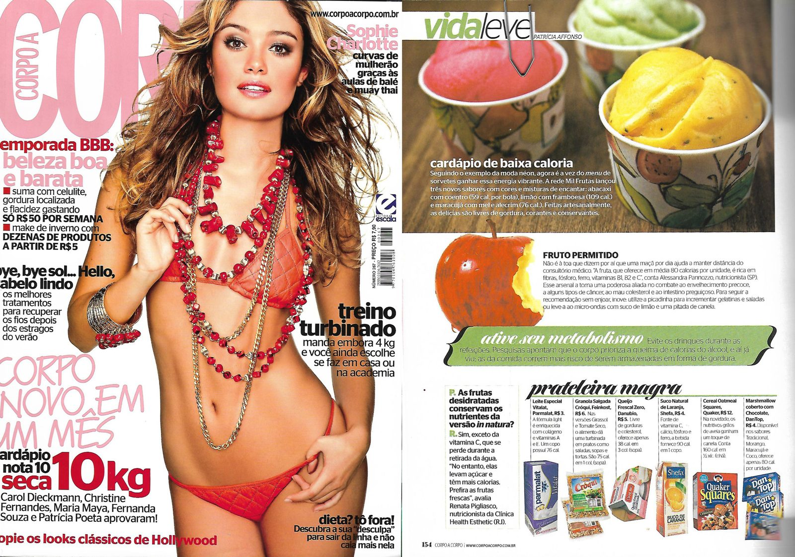
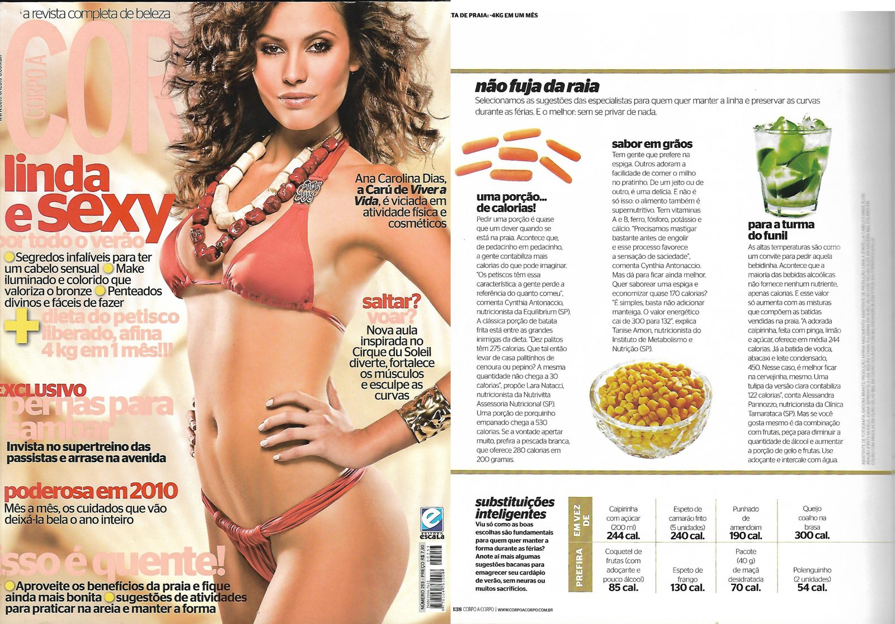
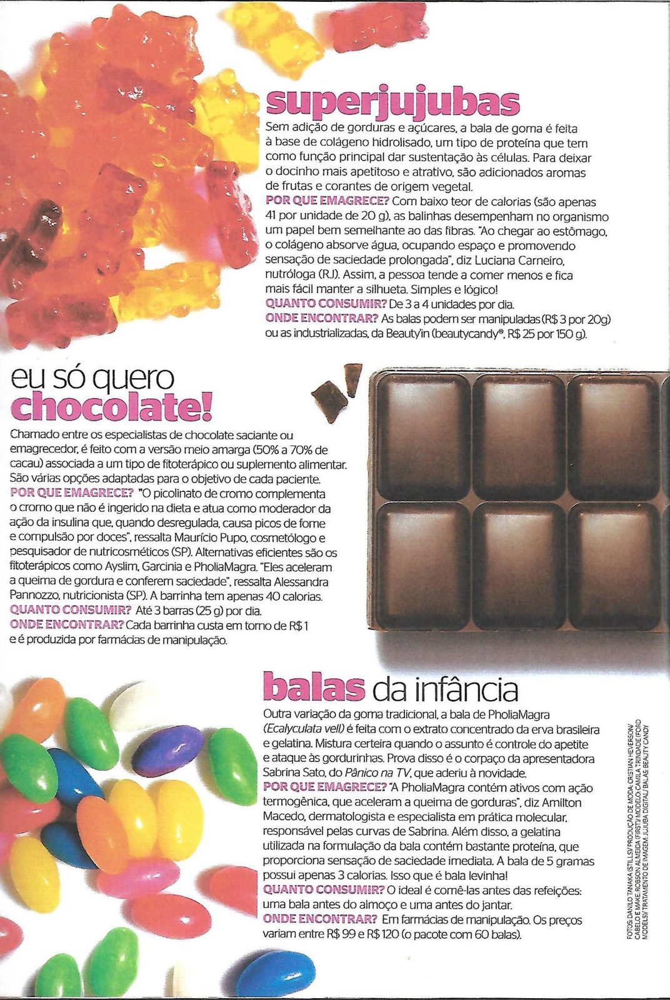
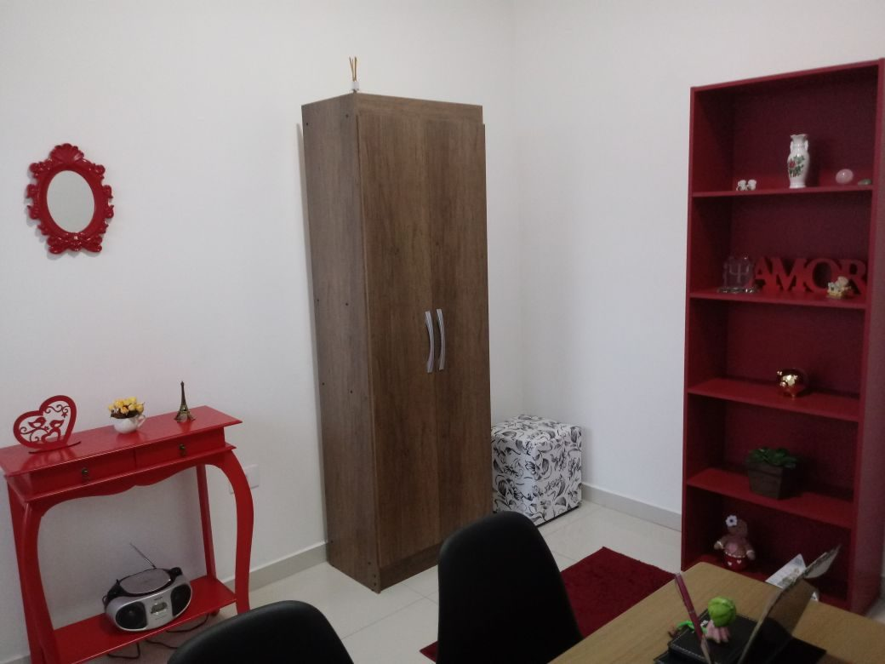
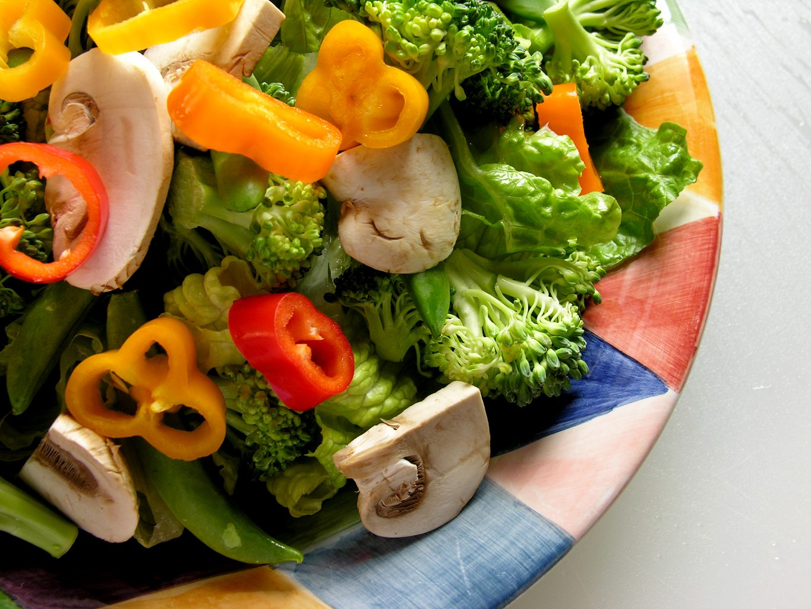

Nutrição de verdade para toda a família
Reeducação alimentar individualizada, com consulta de no mínimo 1 hora, bioimpedância e cardápio feito sob medida para o seu objetivo — da criança à gestante.
Consultório na Rua Madre de Deus · também atende online.

“Alimente-se para nutrir o corpo, e não as carências.”Alessandra Pannozzo
Tempo e atenção de verdade — no mínimo 1 hora
Nada de consulta corrida. Cada atendimento é individualizado e considera o objetivo e as necessidades de cada paciente.
- 1
Avaliação nutricional
Histórico, hábitos e objetivos conversados com calma.
- 2
Avaliação antropométrica e bioimpedância
Medidas e composição corporal para acompanhar sua evolução.
- 3
Cardápio personalizado
Elaborado para o seu objetivo, sua rotina e sua fase de vida.


Quais são as suas necessidades?
Toque no serviço e fale direto com a Alessandra pelo WhatsApp.
Reeducação alimentar
Para crianças, adolescentes, adultos e gestantes — hábitos novos que duram.
Quero saber mais → 02Obesidade e distúrbios associados
Acompanhamento para perda de peso e prevenção de doenças como o diabetes.
Quero saber mais → 03Nutrição para estética e esportes
Alimentação estratégica para performance, composição corporal e bem-estar.
Quero saber mais → 04 · ExclusivoNutrifloral
Acompanhamento nutricional associado aos Florais de Saint Germain — corpo e emoções no mesmo cuidado.
Quero conhecer → 05Nutrição clínica
Avaliação nutricional, orientação dietoterápica clínica e plano alimentar individualizado.
Quero saber mais → 06Gestantes e crianças
Cuidado nutricional nas fases que mais pedem atenção — atende crianças a partir dos 3 anos.
Quero saber mais →Mora longe? Atendimento online
Para quem está em outra cidade ou até em outro país: consulta à distância, com horário agendado como no presencial e o mesmo cuidado — sem a avaliação física.
Muitos anos de consultório e um olhar integrativo
Nutricionista graduada pela Universidade São Judas Tadeu, atua há muitos anos em consultório. Une a nutrição clínica a práticas que cuidam também do bem-estar emocional.
- Nutricionista CRN-3 13104 · graduada pela Universidade São Judas Tadeu
- Instrutora de Yôga pela Primeira Universidade de Yôga do Brasil (supervisão Mestre DeRose/PUC)
- Formação em Terapia Floral de Saint Germain
- Formação em Reiki nível I, em formação para o nível II
- Grupos de orientação para alimentação saudável e prevenção de doenças associadas à obesidade, como o diabetes
- Palestras e workshops sobre reeducação alimentar e transtornos alimentares
Artigos e entrevistas sobre nutrição
A Alessandra já publicou diversos artigos sobre nutrição e alimentos em revistas.





100 avaliações no Google
Venha conhecer o espaço
EndereçoRua Madre de Deus, 1007/1009
Mooca · São Paulo/SP
WhatsApp e telefone(11) 99409-1751


Cuide da sua alimentação com quem tem tempo para te ouvir
Presencial na Mooca ou online. Agende pelo WhatsApp.
Quero agendar agora